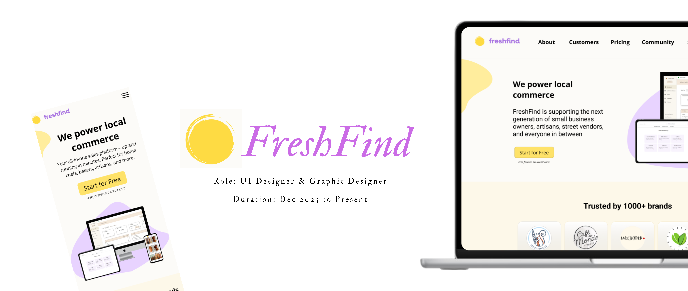
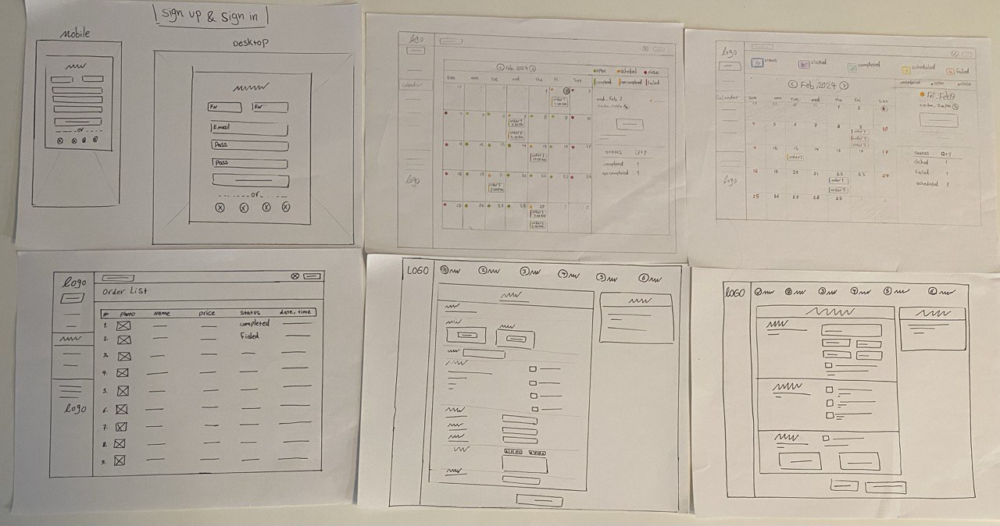
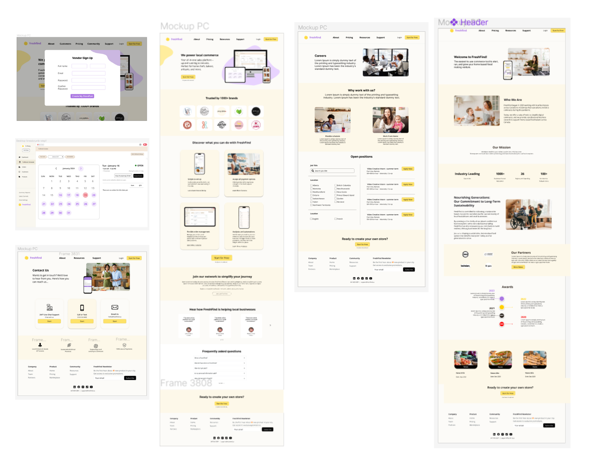
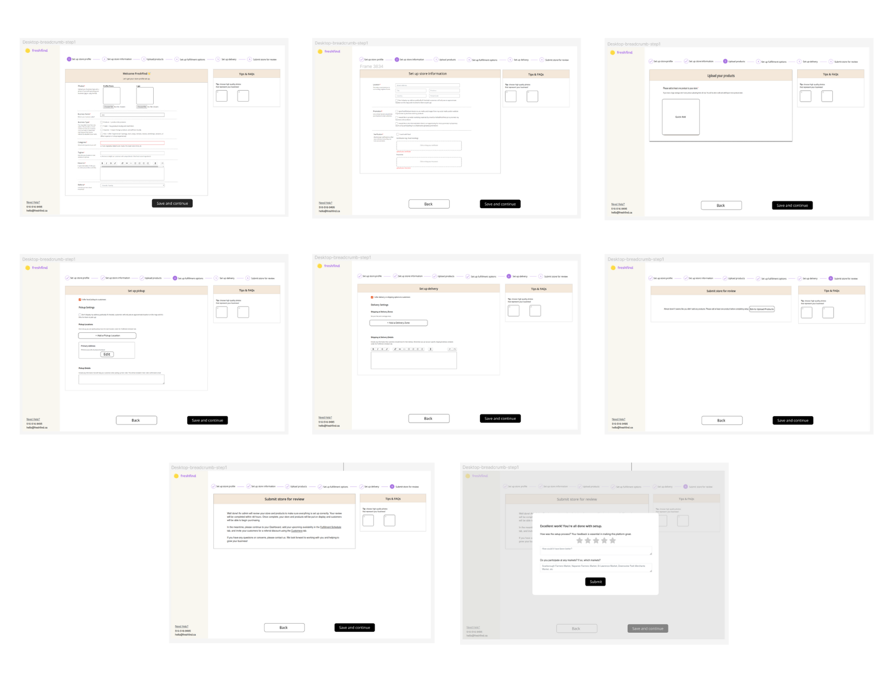
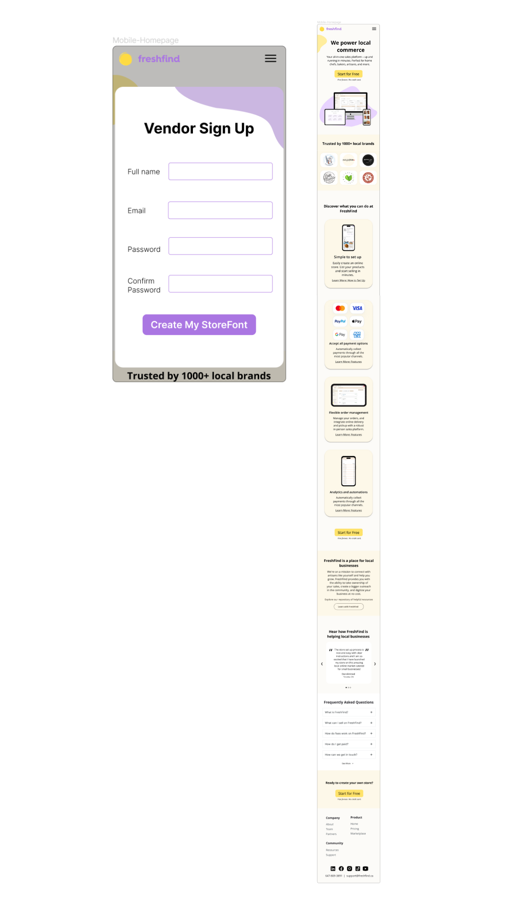

I focused on redesigning the FreshFind e-commerce website based on my company needs and user testing. Usually I am finding several successfully relative designs as a refrences and then redesining 3 to 6 version of each pages and collaborate my team to desiged witch version is better and we can choose it as a final design. beginning with the redesign of its crucial Home page for both Desktop and Mobile platforms. Subsequently, I tackled the Sign-Up page design for both Desktop and Mobile interfaces. Following this, I undertook the redesign of the Fulfillment breadcrumb steps pages specifically for Desktop users. Presently, I am engaged in redesigning the About and Support pages for Desktop while concurrently developing their Mobile counterparts.



